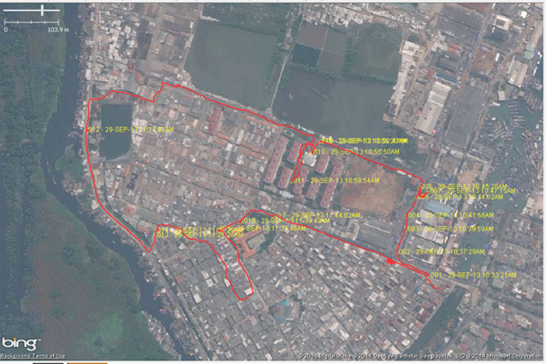
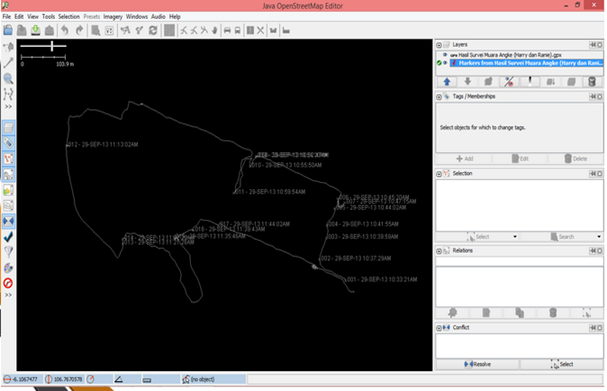
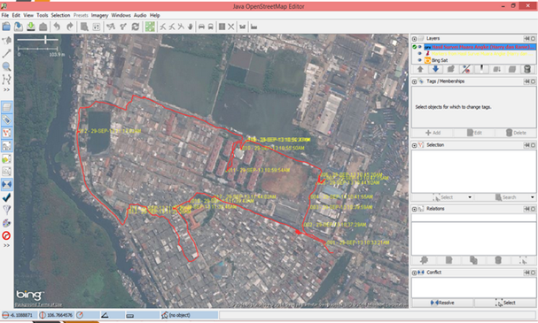

Chapter 6: Using GPS¶
Learning objectives:
Understand GPS and the types of GPS
Turn on a GPS unit
Adjust GPS settings
Understand factors that affect GPS accuracy
Understand tracks and waypoints
Collect data using GPS
Copy GPS data (tracks and waypoints) to computer
Open waypoints and tracks in JOSM
In this chapter we discuss one of the most important parts of mapping: how to add actual information from field to map. We will learn several methods to do field survey in this module. We will see what GPS is and how GPS work. You will learn how to operate GPS and how to use the results for making a map.
Here we will explain how to operate Garmin eTrex Vista HCx, a GPS that is commonly use for mapping activities. There are so many other GPS model that can use the same operation so if you use different model, don’t worry – in principle it is still the same.
6.1 What is GPS?¶
A GPS is like a mobile phone, except that instead of receiving radio signals from telephone companies, it receives signals from satellites that are going around the Earth. By receiving these signals from the satellites, a GPS is able to calculate its exact location on the planet. It records this location in coordinates, which are two long numbers. One number tells you how far east or west you are - this is called longitude. The second number tells you how far north or south you are - this is called latitude. Every place on Earth has unique geographic coordinates.
{kind=link}
{kind=link}
6.2 Turning on the GPS¶
- Before turning on your GPS, go outside where you have a clear view of the sky.
Because the GPS determines your location by receiving signals from satellites, it will not work indoors.
- On the right side of the GPS, press and hold the Power button.
The GPS will start, and it will show you the Satellites page. You should see something like the image below, where the GPS is seeking satellite signals. When it has connected to three or more satellites, it can determine your location.
{kind=link}
- Once your location is determined, the Satellites page will disappear and
you will see the Main Menu.
{kind=link}
6.4 Tracks and waypoints¶
A GPS records two kinds of information that are useful for creating maps or saving the coordinates of a place. First, it allows you to save your location in the memory of the GPS. When you save a location, the coordinates will be saved with a name. For example, by default your first saved point will be named 001, the second 002, and so on.
When you save a point, you can write down the number on a piece of paper, along with a note about what it is, and any attributes or indicators you would like to collect. Saved locations on your GPS are called waypoints.
Second, a GPS can save what are called tracks. While a waypoint only saves a single location, a track will save a series of locations wherever you move. For example, a track will record your location every one second, or every one metre, and the result will be a series of dots that show the path of where you have been. Tracks are useful for mapping objects that are represented by lines or shapes, such as the course of a road or the shape of a field.
Note
If your GPS not started from 001 and you want to erase the previous point, go to icon “Find” in the main menu. Press on “waypoint” and then submenu in the right side to show Waypoint submenu. Drag to bottom and press “Delete” and “all symbols” and then “Yes”.
6.5 Saving your location¶
To save your current location as a waypoint:
- click the X button until your reach the Main Menu.
Using the joystick, move it so that Mark is highlighted on the screen. Push the joystick button down to open the Save Waypoint page.
You can see on this page some information about the waypoint that you are saving. First is the name. If this is your first waypoint, it probably reads “001”. This is the number you should record on paper along with the information you want to collect about this object, e.g. name, address, phone, etc. Next you will see the time and date when the point is recorded. Below that are the coordinates, followed by the altitude.
- Use the joystick to move to the OK button at the bottom of the screen.
Press the joystick button down to save this point. Be sure to write down in your notebook the number of the point, along with a description of the place and any other information you want to record about the place.
{kind=link}
- Press the X button to go to the Map page. You should now see your point
on the map.
6.6 Turning on the Track Log¶
Now that we have learned how to save points, let’s learn how to turn the track log on and off. When the track log is turned on, it will automatically record your path. It’s good practice to turn on the log when you begin mapping, and turn it off when you are finished. You will then be able to look at the track on a computer and see the path that you mapped. If you would like to map the course of a road, it is a good idea to save a waypoint at the beginning and end of the road, writing in your notebook the name and type of the road, and any other important information about the road.
- To turn track log, click the X button until your reach the page that
says Track Log.
- If you want To empty the track log (to delete earlier recordings), use
the joystick to select Clear, and press the joystick down. The bar at the top should read “0%”
- To turn on the log, move the joystick to highlight On, and press the joystick down.
The track log is now recording your path.
- Press the X button to go to the Map page. As you move you will see your
track shown as a series of dots.
6.7 Copying waypoints and tracks to the computer¶
When you are finished mapping with the GPS you will want to copy the points and tracks to your computer so that you can open them in JOSM and begin editing.
One way to copy waypoints and tracks is using the free BaseCamp software supplied by Garmin and available for download from the Garmin website. However in this module, we will use an opensource program called GPSBabel, that provides several additional features.
6.7.1 Installing GPS drivers¶
- You may need to install GPS drivers on your computer. Open your training
folder and find
software/USBDrivers_23.exe. Double-click it and install.
- If you don’t have this file, you can download it. Open your internet
browser and go to: http://www8.garmin.com/support/download_details .jsp?id=591
- 3 Click Download to get the installation file. Locate it on your
computer, and double-click to install.
6.7.2 Attaching GPS to the Computer¶
1. First, turn off the track log on your GPS by going to the Track page and selecting Off.
- Attach the GPS to your computer with the cable. One end should plug into
your computer’s USB port, and the other goes into the back of the GPS, beneath the rubber flap at the top. The GPS should be turned on to facilitate copying of the points and tracks.
6.7.2 Getting the GPSBabel setup program¶
GPSBabel is a program that allows us to copy data from the GPS. If you have copy of GPSBabel in CD or flashdisk, you can skip this step and move to next section. If you don’t have GPSbabel:
Open your web browser and go to www.gpsbabel.org
Click Downloads at the top of the page.
- Scroll down the page. If your computer uses Windows, you want to
download the installation file for Windows. Click
GPSBabel-1.5.1-Setup.exe. The file will be downloaded to your computer. Find GPSBabel installation software and double click to install.
Click Next.
Clcik I accept and Next.
Continue clicking Next until the program installs.
When the program has finished installing, click Finish to start GPSBabel.
6.7.3 Copying Tracks and Waypoints¶
After you success install GPSBabel, it will automatically launch GPSBabel. Otherwise, you can find GPSBabel icon in the desktop or start menu.
- Click in the circle next to the word Device at the top of the
window.
In the drop-down menu labelled Format, select Garmin serial/USB protocol
Go down to the middle of the window, under Output. In the drop-down menu labelled Format, select GPX XML
- Click File Name and type a name for your saved file.
It should be something that describes the data, such as the date and the location. For example:
jakarta-07-07-2014.
Make sure your GPS is connected to the computer and turned on.
Click Apply in the bottom right corner of the window
- If all goes well you should see a bar move across the screen,
indicating that the data is being retrieved from the GPS. When it is finished, your points and track will be saved in the file that you selected
6.8 Open Waypoints and Tracks in JOSM¶
Now open JOSM. Go to
Find and select the file that you created with GPSBabel. Click Open.
You should now see your points and tracks loaded into JOSM.
6.8.1 Change waypoints and tracks colour in JOSM¶
To change tracks and waypoints colour, right click on the track layer or waypoints layer and then select Customize Colours and choose your preferred colour.
For tracks, not only you can change line colour but you can also change line width. Right click on track layer and then select Customize Track Drawing. Change Drawing width of GPX Lines with your preferred number (The larger the number the thicker the line)
Summary¶
Congratulations! Now you already learned about how to use GPS. If you still need practice, try to save points from several location that you think important.
In this chapter we have learned how to collect waypoints and tracks, download them from the GPS, and display them in JOSM. Later we will use this information to add new objects in OpenStreetMap.
In the next chapter, we will learn about another survey method called Field Papers. Field Papers allows you to create map without a GPS!